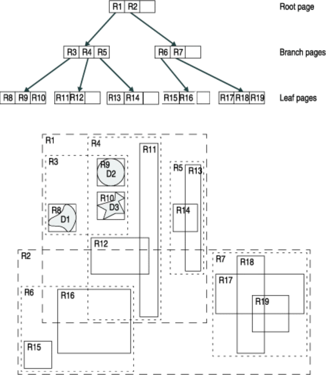
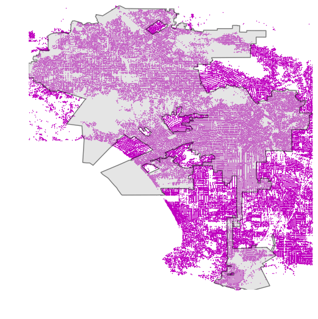
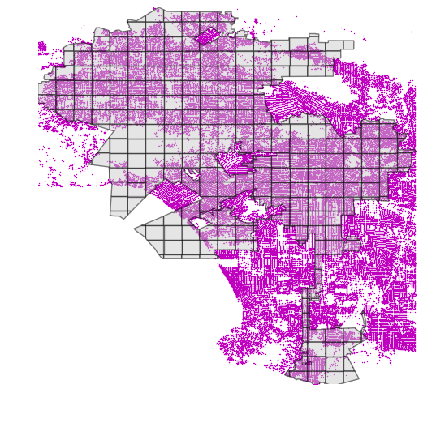

Operations between multiple datasets
Contents
Operations between multiple datasets#
Selecting data based on spatial relationships
Overlay analysis
Spatial join, nearest join
Distance operations
Spatial index
Selecting data based on spatial relationships#
Finding out if a certain point is located inside or outside of an area, or finding out if a line intersects with another line or polygon are fundamental geospatial operations that are often used e.g. to select data based on location. Such spatial queries are one of the typical first steps of the workflow when doing spatial analysis. Performing a spatial join (will be introduced later) between two spatial datasets is one of the most typical applications where Point in Polygon (PIP) query is used.
For further reading about PIP and other geometric operations, see Chapter 4.2 in Smith, Goodchild & Longley: Geospatial Analysis - 6th edition.
How to check if point is inside a polygon?#
Computationally, detecting if a point is inside a polygon is most commonly done using a specific formula called Ray Casting algorithm. Luckily, we do not need to create such a function ourselves for conducting the Point in Polygon (PIP) query. Instead, we can take advantage of Shapely’s binary predicates that can evaluate the topolocical relationships between geographical objects, such as the PIP as we’re interested here.
There are basically two ways of conducting PIP in Shapely:
using a function called within() that checks if a point is within a polygon
using a function called contains() that checks if a polygon contains a point
Notice: even though we are talking here about Point in Polygon operation, it is also possible to check if a LineString or Polygon is inside another Polygon.
Let’s import shapely functionalities and create some points:
from shapely.geometry import Point, Polygon
# Create Point objects
p1 = Point(24.952242, 60.1696017)
p2 = Point(24.976567, 60.1612500)
Let’s also create a polygon using a list of coordinate-tuples:
# Create a Polygon
coords = [
(24.950899, 60.169158),
(24.953492, 60.169158),
(24.953510, 60.170104),
(24.950958, 60.169990),
]
poly = Polygon(coords)
# Let's check what we have
print(p1)
print(p2)
print(poly)
Let’s check if those points are
withinthe polygon:
# Check if p1 is within the polygon using the within function
p1.within(poly)
# Check if p2 is within the polygon
p2.within(poly)
Okey, so we can see that the first point seems to be inside that polygon and the other one isn’t.
-In fact, the first point is quite close to close to the center of the polygon as we can see if we compare the point location to the polygon centroid:
# Our point
print(p1)
# The centroid
print(poly.centroid)
It is also possible to do PIP other way around, i.e. to check if polygon contains a point:
# Does polygon contain p1?
poly.contains(p1)
# Does polygon contain p2?
poly.contains(p2)
Thus, both ways of checking the spatial relationship are identical; contains() is inverse to within() and vice versa.
Which one should you use then? Well, it depends:
if you have many points and just one polygon and you try to find out which one of them is inside the polygon: You might need to iterate over the points and check one at a time if it is within() the polygon.
if you have many polygons and just one point and you want to find out which polygon contains the point: You might need to iterate over the polygons until you find a polygon that contains() the point specified (assuming there are no overlapping polygons)
Intersect#
Another typical geospatial operation is to see if a geometry intersects or touches another one. Again, there are binary operations in Shapely for checking these spatial relationships:
intersects(): Two objects intersect if the boundary or interior of one object intersect in any way with the boundary or interior of the other object.
touches(): Two objects touch if the objects have at least one point in common and their interiors do not intersect with any part of the other object.
Let’s try these out.
Let’s create two LineStrings:
from shapely.geometry import LineString, MultiLineString
# Create two lines
line_a = LineString([(0, 0), (1, 1)])
line_b = LineString([(1, 1), (0, 2)])
Let’s see if they intersect
line_a.intersects(line_b)
Do they also touch?
line_a.touches(line_b)
Indeed, they do and we can see this by plotting the features together
# Create a MultiLineString from line_a and line_b
multi_line = MultiLineString([line_a, line_b])
multi_line
Thus, the line_b continues from the same node ( (1,1) ) where line_a ends.
However, if the lines overlap fully, they don’t touch due to the spatial relationship rule, as we can see:
Check if line_a touches itself:
# Does the line touch with itself?
line_a.touches(line_a)
It does not. However, it does intersect:
# Does the line intersect with itself?
line_a.intersects(line_a)
Point in Polygon using Geopandas#
Next we will do a practical example where we check which of the addresses from the geocoding tutorial are located in Southern district of Helsinki. Let’s start by reading a KML-file PKS_suuralue.kml that has the Polygons for districts of Helsinki Region (data openly available from Helsinki Region Infoshare.
Let’s start by reading the addresses from the Shapefile that we saved earlier.
import geopandas as gpd
fp = "data/addresses.shp"
data = gpd.read_file(fp)
data.head()
Reading KML-files in Geopandas#
It is possible to read the data from KML-files with GeoPandas in a similar manner as Shapefiles. However, we need to first, enable the KML-driver which is not enabled by default (because KML-files can contain unsupported data structures, nested folders etc., hence be careful when reading KML-files). Supported drivers are managed with fiona.supported_drivers, which is integrated in geopandas. Let’s first check which formats are currently supported:
import geopandas as gpd
gpd.io.file.fiona.drvsupport.supported_drivers
Let’s enable the read and write functionalities for KML-driver by passing
'rw'to whitelist of fiona’s supported drivers:
gpd.io.file.fiona.drvsupport.supported_drivers["KML"] = "rw"
Let’s check again the supported drivers:
gpd.io.file.fiona.drvsupport.supported_drivers
Now we should be able to read a KML file using the geopandas read_file() function.
Let’s read district polygons from a KML -file that is located in the data-folder:
# Filepath to KML file
fp = "data/PKS_suuralue.kml"
polys = gpd.read_file(fp, driver="KML")
# Check the data
print("Number of rows:", len(polys))
polys.head(11)
Nice, now we can see that we have 23 districts in our area. Let’s quickly plot the geometries to see how the layer looks like:
polys.plot()
We are interested in an area that is called Eteläinen (‘Southern’ in English).
Let’s select the Eteläinen district and see where it is located on a map:
# Select data
southern = polys.loc[polys["Name"] == "Eteläinen"]
# Reset index for the selection
southern.reset_index(drop=True, inplace=True)
# Check the selction
southern.head()
Let’s create a map which shows the location of the selected district, and let’s also plot the geocoded address points on top of the map:
import matplotlib.pyplot as plt
# Create a figure with one subplot
fig, ax = plt.subplots()
# Plot polygons
polys.plot(ax=ax, facecolor="gray")
southern.plot(ax=ax, facecolor="red")
# Plot points
data.plot(ax=ax, color="blue", markersize=5)
plt.tight_layout()
Okey, so we can see that, indeed, certain points are within the selected red Polygon.
Let’s find out which one of them are located within the Polygon. Hence, we are conducting a Point in Polygon query.
First, let’s check that we have shapely.speedups enabled. This module makes some of the spatial queries running faster (starting from Shapely version 1.6.0 Shapely speedups are enabled by default):
# import shapely.speedups
from shapely import speedups
speedups.enabled
# If false, run this line:
# shapely.speedups.enable()
Let’s check which Points are within the
southernPolygon. Notice, that here we check if the Points arewithinthe geometry of thesouthernGeoDataFrame.We use the
.at[0, 'geometry']to parse the actual Polygon geometry object from the GeoDataFrame.
pip_mask = data.within(southern.at[0, "geometry"])
print(pip_mask)
As we can see, we now have an array of boolean values for each row, where the result is True
if Point was inside the Polygon, and False if it was not.
We can now use this mask array to select the Points that are inside the Polygon. Selecting data with this kind of mask array (of boolean values) is easy by passing the array inside the loc indexer:
pip_data = data.loc[pip_mask]
pip_data
Let’s finally confirm that our Point in Polygon query worked as it should by plotting the points that are within the southern district:
# Create a figure with one subplot
fig, ax = plt.subplots()
# Plot polygons
polys.plot(ax=ax, facecolor="gray")
southern.plot(ax=ax, facecolor="red")
# Plot points
pip_data.plot(ax=ax, color="gold", markersize=2)
plt.tight_layout()
Perfect! Now we only have the (golden) points that, indeed, are inside the red Polygon which is exactly what we wanted!
Overlay analysis#
In this tutorial, the aim is to make an overlay analysis where we create a new layer based on geometries from a dataset that intersect with geometries of another layer. As our test case, we will select Polygon grid cells from TravelTimes_to_5975375_RailwayStation_Helsinki.shp that intersects with municipality borders of Helsinki found in Helsinki_borders.shp.
Typical overlay operations are (source: QGIS docs):

import geopandas as gpd
import matplotlib.pyplot as plt
import shapely.speedups
%matplotlib inline
# File paths
border_fp = "data/Helsinki_borders.shp"
grid_fp = "data/TravelTimes_to_5975375_RailwayStation.shp"
# Read files
grid = gpd.read_file(grid_fp)
hel = gpd.read_file(border_fp)
Let’s do a quick overlay visualization of the two layers:
# Plot the layers
ax = grid.plot(facecolor="gray")
hel.plot(ax=ax, facecolor="None", edgecolor="blue")
Here the grey area is the Travel Time Matrix - a data set that contains 13231 grid squares (13231 rows of data) that covers the Helsinki region, and the blue area represents the municipality of Helsinki. Our goal is to conduct an overlay analysis and select the geometries from the grid polygon layer that intersect with the Helsinki municipality polygon.
When conducting overlay analysis, it is important to first check that the CRS of the layers match. The overlay visualization indicates that everything should be ok (the layers are plotted nicely on top of each other). However, let’s still check if the crs match using Python:
# Check the crs of the municipality polygon
print(hel.crs)
# Ensure that the CRS matches, if not raise an AssertionError
assert hel.crs == grid.crs, "CRS differs between layers!"
Indeed, they do. We are now ready to conduct an overlay analysis between these layers.
We will create a new layer based on grid polygons that intersect with our Helsinki layer. We can use a function called overlay() to conduct the overlay analysis that takes as an input 1) first GeoDataFrame, 2) second GeoDataFrame, and 3) parameter how that can be used to control how the overlay analysis is conducted (possible values are 'intersection', 'union', 'symmetric_difference', 'difference', and 'identity'):
intersection = gpd.overlay(grid, hel, how="intersection")
Let’s plot our data and see what we have:
intersection.plot(color="b")
As a result, we now have only those grid cells that intersect with the Helsinki borders. If you look closely, you can also observe that the grid cells are clipped based on the boundary.
Whatabout the data attributes? Let’s see what we have:
intersection.head()
As we can see, due to the overlay analysis, the dataset contains the attributes from both input layers.
Let’s save our result grid as a GeoJSON file that is commonly used file format nowadays for storing spatial data.
# Output filepath
outfp = "data/TravelTimes_to_5975375_RailwayStation_Helsinki.geojson"
# Use GeoJSON driver
intersection.to_file(outfp, driver="GeoJSON")
There are many more examples for different types of overlay analysis in Geopandas documentation where you can go and learn more.
Spatial join#
Spatial join is yet another classic GIS problem. Getting attributes from one layer and transferring them into another layer based on their spatial relationship is something you most likely need to do on a regular basis.
In the previous section we learned how to perform a Point in Polygon query.
We can now use the same logic to conduct a spatial join between two layers based on their
spatial relationship. We could, for example, join the attributes of a polygon layer into a point layer where each point would get the
attributes of a polygon that contains the point.
Luckily, spatial join is already implemented in Geopandas, thus we do not need to create our own function for doing it. There are three possible types of
join that can be applied in spatial join that are determined with op -parameter in the gpd.sjoin() -function:
"intersects""within""contains"
Sounds familiar? Yep, all of those spatial relationships were discussed in the Point in Polygon lesson, thus you should know how they work.
Furthermore, pay attention to the different options for the type of join via the how parameter; “left”, “right” and “inner”. You can read more about these options in the geopandas sjoin documentation and pandas guide for merge, join and concatenate
Let’s perform a spatial join between these two layers:
Addresses: the geocoded address-point (we created this Shapefile in the geocoding tutorial)
Population grid: 250m x 250m grid polygon layer that contains population information from the Helsinki Region.
The population grid a dataset is produced by the Helsinki Region Environmental Services Authority (HSY) (see this page to access data from different years).
You can download the data from from this link in the Helsinki Region Infroshare (HRI) open data portal.
Here, we will access the data directly from the HSY wfs:
import geopandas as gpd
from pyproj import CRS
import requests
import geojson
# Specify the url for web feature service
url = "https://kartta.hsy.fi/geoserver/wfs"
# Specify parameters (read data in json format).
# Available feature types in this particular data source: http://geo.stat.fi/geoserver/vaestoruutu/wfs?service=wfs&version=2.0.0&request=describeFeatureType
params = dict(
service="WFS",
version="2.0.0",
request="GetFeature",
typeName="asuminen_ja_maankaytto:Vaestotietoruudukko_2018",
outputFormat="json",
)
# Fetch data from WFS using requests
r = requests.get(url, params=params)
# Create GeoDataFrame from geojson
pop = gpd.GeoDataFrame.from_features(geojson.loads(r.content))
Check the result:
pop.head()
Okey so we have multiple columns in the dataset but the most important
one here is the column asukkaita (“population” in Finnish) that
tells the amount of inhabitants living under that polygon.
Let’s change the name of that column into
pop18so that it is more intuitive. As you might remember, we can easily rename (Geo)DataFrame column names using therename()function where we pass a dictionary of new column names like this:columns={'oldname': 'newname'}.
# Change the name of a column
pop = pop.rename(columns={"asukkaita": "pop18"})
# Check the column names
pop.columns
Let’s also get rid of all unnecessary columns by selecting only columns that we need i.e. pop18 and geometry
# Subset columns
pop = pop[["pop18", "geometry"]]
pop.head()
Now we have cleaned the data and have only those columns that we need for our analysis.
Join the layers#
Now we are ready to perform the spatial join between the two layers that
we have. The aim here is to get information about how many people live
in a polygon that contains an individual address-point . Thus, we want
to join attributes from the population layer we just modified into the
addresses point layer addresses.shp that we created trough gecoding in the previous section.
Read the addresses layer into memory:
# Addresses filpath
addr_fp = r"data/addresses.shp"
# Read data
addresses = gpd.read_file(addr_fp)
# Check the head of the file
addresses.head()
In order to do a spatial join, the layers need to be in the same projection
Check the crs of input layers:
addresses.crs
pop.crs
If the crs information is missing from the population grid, we can define the coordinate reference system as ETRS GK-25 (EPSG:3879) because we know what it is based on the population grid metadata.
# Define crs
pop.crs = CRS.from_epsg(3879).to_wkt()
pop.crs
# Are the layers in the same projection?
addresses.crs == pop.crs
Let’s re-project addresses to the projection of the population layer:
addresses = addresses.to_crs(pop.crs)
Let’s make sure that the coordinate reference system of the layers are identical
# Check the crs of address points
print(addresses.crs)
# Check the crs of population layer
print(pop.crs)
# Do they match now?
addresses.crs == pop.crs
Now they should be identical. Thus, we can be sure that when doing spatial queries between layers the locations match and we get the right results e.g. from the spatial join that we are conducting here.
Let’s now join the attributes from
popGeoDataFrame intoaddressesGeoDataFrame by usinggpd.sjoin()-function:
# Make a spatial join
join = gpd.sjoin(addresses, pop, how="inner", op="within")
join.head()
Awesome! Now we have performed a successful spatial join where we got
two new columns into our join GeoDataFrame, i.e. index_right
that tells the index of the matching polygon in the population grid and
pop18 which is the population in the cell where the address-point is
located.
Let’s still check how many rows of data we have now:
len(join)
Did we lose some data here?
Check how many addresses we had originally:
len(addresses)
If we plot the layers on top of each other, we can observe that some of the points are located outside the populated grid squares (increase figure size if you can’t see this properly!)
import matplotlib.pyplot as plt
# Create a figure with one subplot
fig, ax = plt.subplots(figsize=(15, 8))
# Plot population grid
pop.plot(ax=ax)
# Plot points
addresses.plot(ax=ax, color="red", markersize=5)
Let’s also visualize the joined output:
Plot the points and use the pop18 column to indicate the color.
cmap -parameter tells to use a sequential colormap for the
values, markersize adjusts the size of a point, scheme parameter can be used to adjust the classification method based on pysal, and legend tells that we want to have a legend:
# Create a figure with one subplot
fig, ax = plt.subplots(figsize=(10, 6))
# Plot the points with population info
join.plot(
ax=ax, column="pop18", cmap="Reds", markersize=15, scheme="quantiles", legend=True
)
# Add title
plt.title("Amount of inhabitants living close the the point")
# Remove white space around the figure
plt.tight_layout()
In a similar way, we can plot the original population grid and check the overall population distribution in Helsinki:
# Create a figure with one subplot
fig, ax = plt.subplots(figsize=(10, 6))
# Plot the grid with population info
pop.plot(ax=ax, column="pop18", cmap="Reds", scheme="quantiles", legend=True)
# Add title
plt.title("Population 2018 in 250 x 250 m grid squares")
# Remove white space around the figure
plt.tight_layout()
Finally, let’s save the result point layer into a file:
# Output path
outfp = r"data/addresses_population.shp"
# Save to disk
join.to_file(outfp)
Spatial join nearest#
ADD Materials
Nearest Neighbour Analysis#
One commonly used GIS task is to be able to find the nearest neighbour for an object or a set of objects. For instance, you might have a single Point object representing your home location, and then another set of locations representing e.g. public transport stops. Then, quite typical question is “which of the stops is closest one to my home?” This is a typical nearest neighbour analysis, where the aim is to find the closest geometry to another geometry.
In Python this kind of analysis can be done with shapely function called nearest_points() that returns a tuple of the nearest points in the input geometries.
Nearest point using Shapely#
Let’s start by testing how we can find the nearest Point using the nearest_points() function of Shapely.
Let’s create an origin Point and a few destination Points and find out the closest destination:
from shapely.geometry import Point, MultiPoint
from shapely.ops import nearest_points
# Origin point
orig = Point(1, 1.67)
# Destination points
dest1 = Point(0, 1.45)
dest2 = Point(2, 2)
dest3 = Point(0, 2.5)
To be able to find out the closest destination point from the origin, we need to create a MultiPoint object from the destination points.
destinations = MultiPoint([dest1, dest2, dest3])
print(destinations)
destinations
Okey, now we can see that all the destination points are represented as a single MultiPoint object.
Now we can find out the nearest destination point by using
nearest_points()function:
nearest_geoms = nearest_points(orig, destinations)
We can check the data type of this object and confirm that the
nearest_points()function returns a tuple of nearest points:
type(nearest_geoms)
let’s check the contents of this tuple:
print(nearest_geoms)
print(nearest_geoms[0])
print(nearest_geoms[1])
In the tuple, the first item (at index 0) is the geometry of our origin point and the second item (at index 1) is the actual nearest geometry from the destination points. Hence, the closest destination point seems to be the one located at coordinates (0, 1.45).
This is the basic logic how we can find the nearest point from a set of points.
Nearest points using Geopandas#
Let’s then see how it is possible to find nearest points from a set of origin points to a set of destination points using GeoDataFrames. Here, we will use the PKS_suuralueet.kml district data, and the addresses.shp address points from previous sections.
Our goal in this tutorial is to find out the closest address to the centroid of each district.
Let’s first read in the data and check their structure:
# Import geopandas
import geopandas as gpd
# Define filepaths
fp1 = "data/PKS_suuralue.kml"
fp2 = "data/addresses.shp"
# Enable KML driver
gpd.io.file.fiona.drvsupport.supported_drivers["KML"] = "rw"
# Read in data with geopandas
df1 = gpd.read_file(fp1, driver="KML")
df2 = gpd.read_file(fp2)
# District polygons:
df1.head()
# Address points:
df2.head()
Before calculating any distances, we should re-project the data into a projected crs.
df1 = df1.to_crs(epsg=3067)
df2 = df2.to_crs(epsg=3067)
Furthermore, let’s calculate the centroids for each district area:
df1["centroid"] = df1.centroid
df1.head()
SO, for each row of data in the disctricts -table, we want to figure out the nearest address point and fetch some attributes related to that point. In other words, we want to apply the Shapely nearest_pointsfunction so that we compare each polygon centroid to all address points, and based on this information access correct attribute information from the address table.
For doing this, we can create a function that we will apply on the polygon GeoDataFrame:
def get_nearest_values(
row, other_gdf, point_column="geometry", value_column="geometry"
):
"""Find the nearest point and return the corresponding value from specified value column."""
# Create an union of the other GeoDataFrame's geometries:
other_points = other_gdf["geometry"].unary_union
# Find the nearest points
nearest_geoms = nearest_points(row[point_column], other_points)
# Get corresponding values from the other df
nearest_data = other_gdf.loc[other_gdf["geometry"] == nearest_geoms[1]]
nearest_value = nearest_data[value_column].values[0]
return nearest_value
By default, this function returns the geometry of the nearest point for each row. It is also possible to fetch information from other columns by changing the value_column parameter.
The function creates a MultiPoint object from other_gdf geometry column (in our case, the address points) and further passes this MultiPoint object to Shapely’s nearest_points function.
Here, we are using a method for creating an union of all input geometries called unary_union.
Let’s check how unary union works by applying it to the address points GeoDataFrame:
unary_union = df2.unary_union
print(unary_union)
Okey now we are ready to use our function and find closest address point for each polygon centroid.
Try first applying the function without any additional modifications:
df1["nearest_loc"] = df1.apply(
get_nearest_values, other_gdf=df2, point_column="centroid", axis=1
)
Finally, we can specify that we want the
id-column for each point, and store the output in a new column"nearest_loc":
df1["nearest_loc"] = df1.apply(
get_nearest_values,
other_gdf=df2,
point_column="centroid",
value_column="id",
axis=1,
)
df1.head()
That’s it! Now we found the closest point for each centroid and got the id value from our addresses into the df1 GeoDataFrame.
Nearest neighbor analysis with large datasets#
While Shapely’s nearest_points -function provides a nice and easy way of conducting the nearest neighbor analysis, it can be quite slow. Using it also requires taking the unary union of the point dataset where all the Points are merged into a single layer. This can be a really memory hungry and slow operation, that can cause problems with large point datasets.
Luckily, there is a much faster and memory efficient alternatives for conducting nearest neighbor analysis, based on a function called BallTree from a scikit-learn library. The Balltree algorithm has some nice features, such as the ability to calculate the distance between neighbors with various different distance metrics. Most importantly the function allows to calculate euclidian distance between neighbors (good if your data is in metric crs), as well as haversine distance which allows to determine Great Circle distances between locations (good if your data is in lat/lon format). Note: There is also an algorithm called KDTree in scikit-learn, that is also highly efficient but less flexible in terms of supported distance metrics.
Motivation#
In this tutorial, we go through a very practical example that relates to our daily commute: Where is the closest public transport stop from my place of living? Hence, our aim is to search for each building in Helsinki Region (around 159 000 buildings) the closest public transport stop (~ 8400 stops). The building points have been fetched from OpenStreetMap using a library called OSMnx (we will learn more about this library later), and the public transport stops have been fetched from open GTFS dataset for Helsinki Region that contains information about public transport stops, schedules etc.
Efficient nearest neighbor search with Geopandas and scikit-learn#
The following examples show how to conduct nearest neighbor analysis efficiently with large datasets. We will first define the functions and see how to use them, and then we go through the code to understand what happened.
Let’s first read the datasets into Geopandas. In case of reading the building data, we will here learn a trick how to read the data directly from a ZipFile. It is very practical to know how to do this, as compressing large datasets is a very common procedure.
import geopandas as gpd
from zipfile import ZipFile
import io
def read_gdf_from_zip(zip_fp):
"""
Reads a spatial dataset from ZipFile into GeoPandas. Assumes that there is only a single file (such as GeoPackage)
inside the ZipFile.
"""
with ZipFile(zip_fp) as z:
# Lists all files inside the ZipFile, here assumes that there is only a single file inside
layer = z.namelist()[0]
data = gpd.read_file(io.BytesIO(z.read(layer)))
return data
# Filepaths
stops = gpd.read_file("data/pt_stops_helsinki.gpkg")
buildings = read_gdf_from_zip("data/building_points_helsinki.zip")
Let’s see how our datasets look like:
print(buildings.head(), "\n--------")
print(stops.head())
Okay, so both of our datasets consisting points, and based on the coordinates, they seem to be in WGS84 projection.
Let’s also make maps out of them to get a better understanding of the data
%matplotlib inline
import matplotlib.pyplot as plt
fig, axes = plt.subplots(nrows=1, ncols=2, figsize=(20, 10))
# Plot buildings
buildings.plot(ax=axes[0], markersize=0.2, alpha=0.5)
axes[0].set_title("Buildings")
# Plot stops
stops.plot(ax=axes[1], markersize=0.2, alpha=0.5, color="red")
axes[1].set_title("Stops");
As we can see, we have a very densely distributed Point dataset that shows the location of the buildings (their centroid) in Helsinki Region. On the right, we have public transport stops that seem to cover a bit broader geographical extent with a few train stops reaching further North. Most importantly, we can see from the coordinates and the map that both of the layers share the same coordinate reference system, and they are approximately from the same geographical region. Hence, we are ready to find closest public transport stop (on the right) for each building on the left map.
Let’s first prepare a couple of functions that does the work
from sklearn.neighbors import BallTree
import numpy as np
def get_nearest(src_points, candidates, k_neighbors=1):
"""Find nearest neighbors for all source points from a set of candidate points"""
# Create tree from the candidate points
tree = BallTree(candidates, leaf_size=15, metric="haversine")
# Find closest points and distances
distances, indices = tree.query(src_points, k=k_neighbors)
# Transpose to get distances and indices into arrays
distances = distances.transpose()
indices = indices.transpose()
# Get closest indices and distances (i.e. array at index 0)
# note: for the second closest points, you would take index 1, etc.
closest = indices[0]
closest_dist = distances[0]
# Return indices and distances
return (closest, closest_dist)
def nearest_neighbor(left_gdf, right_gdf, return_dist=False):
"""
For each point in left_gdf, find closest point in right GeoDataFrame and return them.
NOTICE: Assumes that the input Points are in WGS84 projection (lat/lon).
"""
left_geom_col = left_gdf.geometry.name
right_geom_col = right_gdf.geometry.name
# Ensure that index in right gdf is formed of sequential numbers
right = right_gdf.copy().reset_index(drop=True)
# Parse coordinates from points and insert them into a numpy array as RADIANS
# Notice: should be in Lat/Lon format
left_radians = np.array(
left_gdf[left_geom_col]
.apply(lambda geom: (geom.y * np.pi / 180, geom.x * np.pi / 180))
.to_list()
)
right_radians = np.array(
right[right_geom_col]
.apply(lambda geom: (geom.y * np.pi / 180, geom.x * np.pi / 180))
.to_list()
)
# Find the nearest points
# -----------------------
# closest ==> index in right_gdf that corresponds to the closest point
# dist ==> distance between the nearest neighbors (in meters)
closest, dist = get_nearest(src_points=left_radians, candidates=right_radians)
# Return points from right GeoDataFrame that are closest to points in left GeoDataFrame
closest_points = right.loc[closest]
# Ensure that the index corresponds the one in left_gdf
closest_points = closest_points.reset_index(drop=True)
# Add distance if requested
if return_dist:
# Convert to meters from radians
earth_radius = 6371000 # meters
closest_points["distance"] = dist * earth_radius
return closest_points
Okay, now we have our functions defined. So let’s use them and find the nearest neighbors!
# Find closest public transport stop for each building and get also the distance based on haversine distance
# Note: haversine distance which is implemented here is a bit slower than using e.g. 'euclidean' metric
# but useful as we get the distance between points in meters
closest_stops = nearest_neighbor(buildings, stops, return_dist=True)
# And the result looks like ..
closest_stops
Great, that didn’t take too long! Especially considering that we had quite a few points in our datasets (8400*159000=1.33 billion connections). As a result, we have a new GeoDataFrame that reminds a lot the original stops dataset. However, as we can see there are much more rows than in the original dataset, and in fact, each row in this dataset corresponds to a single building in the buildings dataset. Hence, we should have exactly the same number of closest_stops as there are buildings. Let’s confirm this:
# Now we should have exactly the same number of closest_stops as we have buildings
print(len(closest_stops), "==", len(buildings))
Indeed, that seems to be the case. Hence, it is easy to combine these two datasets together. Before continuing our analysis, let’s take a bit deeper look, what we actually did with the functions above.
What did we just do? Explanation.#
To get a bit more understanding of what just happened, let’s go through the essential parts of the two functions we defined earlier, i.e. nearest_neighbor() and get_closest().
The purpose of nearest_neighbor() function is to handle and transform the data from GeoDataFrame into numpy arrays (=super-fast data structure) in a format how BallTree function wants them. This includes converting the lat/lon coordinates into radians (and back), so that we get the distances between the neighboring points in a correct format: scikit-learn’s haversine distance metric wants inputs as radians and also outputs the data as radians. To convert a lat/lon coordinate to radian, we use formula: Radian = Degree * PI / 180. By doing this, we are able to get the output distance information in meters (even if our coordinates are in decimal degrees).
The get_closest() function does the actual nearest neighbor search using BallTree function. We initialize the BallTree object with the coordinate information from the right_gdf (i.e. the point dataset that contains all the nearest neighbor candidates), and we specify the distance metric to be haversine so that we get the Great Circle Distances. The leaf_size parameter adjusts the tradeoff between the cost of BallTree node traversal and the cost of a brute-force distance estimate. Changing leaf_size will not affect the results of a query, but can significantly impact the speed of a query and the memory required to store the constructed tree. We determine the leaf_size as 15 which has been found to be a good compromise when benchmarked. After we have built (initialized) the ball-tree, we run the nearest neighbor query with tree.query(src_points, k=k_neighbors), where the src_points are the building-coordinates (as radians) and the k -parameter is the number of neighbors we want to calculate (1 in our case as we are only interested in the closest neighbor). Finally, we just re-arrange the data back into a format in which the closest point indices and distances are in separate numpy arrays.
Note: The functions here assume that your input points are in WGS84 projection. If you pass the points in some other projection, it is highly likely that the distances between nearest neighbors are incorrect. Determining which is the nearest neighbor should not be affected, though.
Combining the neighboring datasets#
Okay, now as we have found closest stop for each building in the region, we can easily merge the information about closest stops back to the building layer. The order of the closest_stops matches exactly the order in buildings, so we can easily merge the datasets based on index.
# Rename the geometry of closest stops gdf so that we can easily identify it
closest_stops = closest_stops.rename(columns={"geometry": "closest_stop_geom"})
# Merge the datasets by index (for this, it is good to use '.join()' -function)
buildings = buildings.join(closest_stops)
# Let's see what we have
buildings.head()
Excellent! Now we have useful information for each building about the closest stop including the distance (in meters) and also e.g. the name of the stop in stop_name column.
Now it is easy to do some descriptive analysis based on this dataset, that gives information about levels of access to public transport in the region:
buildings["distance"].describe()
Okay, as we can see the average distance to public transport in the region is around 300 meters. More than 75 % of the buildings seem to be within within 5 minute walking time (~370 meters with walking speed of 4.5 kmph) which indicates generally a good situation in terms of accessibility levels in the region overall. There seem to be some really remote buildings in the data as well, as the longest distance to closest public transport stop is more than 7 kilometers.
Let’s make a map out of the distance information to see if there are some spatial patterns in the data in terms of accessibility levels:
buildings.plot(
column="distance",
markersize=0.2,
alpha=0.5,
figsize=(10, 10),
scheme="quantiles",
k=4,
legend=True,
)
Okay, as we can see, there are some clear spatial patterns in the levels of access to public transport. The buildings with the shortest distances (i.e. best accessibility) are located in the densely populated areas, whereas the buildings locating in the periferial areas (such as islands on the South, and nature areas in the North-West) tend to have longer distance to public transport.
Are the results correct? Validation#
As a final step, it’s good to ensure that our functions are working as they should. This can be done easily by examining the data visually.
Let’s first create LineStrings between the building and closest stop points:
from shapely.geometry import LineString
# Create a link (LineString) between building and stop points
buildings["link"] = buildings.apply(
lambda row: LineString([row["geometry"], row["closest_stop_geom"]]), axis=1
)
# Set link as the active geometry
building_links = buildings.copy()
building_links = building_links.set_geometry("link")
Let’s now visualize the building points, stops and the links, and zoom to certain area so that we can investigate the results, and confirm that everything looks correct.
# Plot the connecting links between buildings and stops and color them based on distance
ax = building_links.plot(
column="distance",
cmap="Greens",
scheme="quantiles",
k=4,
alpha=0.8,
lw=0.7,
figsize=(13, 10),
)
ax = buildings.plot(ax=ax, color="yellow", markersize=1, alpha=0.7)
ax = stops.plot(ax=ax, markersize=4, marker="o", color="red", alpha=0.9, zorder=3)
# Zoom closer
ax.set_xlim([24.99, 25.01])
ax.set_ylim([60.26, 60.275])
# Set map background color to black, which helps with contrast
ax.set_facecolor("black")
Voilá, these weird star looking shapes are formed around public transport stops (red) where each link is associated buildings (yellow points) that are closest to the given stop. The color intensity varies according the distance between the stops and buildings. Based on this figure we can conclude that our nearest neighbor search was succesfull and worked as planned.
Spatial index - How to boost spatial queries?#
While using the technique from previous examples produces correct results, it is in fact quite slow from performance point of view. Especially when having large datasets (quite typical nowadays), the point in polygon queries can become frustratingly slow, which can be a nerve-racking experience for a busy geo-data scientist.
Luckily there is an easy and widely used solution called spatial index that can significantly boost the performance of your spatial queries. Various alternative techniques has been developed to boost spatial queries, but one of the most popular one and widely used is a spatial index based on R-tree data structure.
The core idea behind the R-tree is to form a tree-like data structure where nearby objects are grouped together, and their geographical extent (minimum bounding box) is inserted into the data structure (i.e. R-tree). This bounding box then represents the whole group of geometries as one level (typically called as “page” or “node”) in the data structure. This process is repeated several times, which produces a tree-like structure where different levels are connected to each other. This structure makes the query times for finding a single object from the data much faster, as the algorithm does not need to travel through all geometries in the data. In the example below, we can see how the geometries have been grouped into several sub-groups (lower part of the picture) and inserted into a tree structure (upper part) where there exists two groups on the highest level (R1 and R2), which are again grouped into five lower level groups (R3-R7):
 Simple example of an R-tree for 2D rectanges (source: IBM)
In the next tutorial we will learn how to significantly improve the query times for finding points that are within a given polygon. We will use data that represents all road intersections in the Uusimaa Region of Finland, and count the number of intersections on a postal code level. Why would you do such a thing?, well, one could for example try to understand the vitality of city blocks following Jane Jacobs’ ideas.
Motivation#
As a motivation for counting intersections, we can use an example/theory from Jane Jacobs’ classic book “The Death and Life of Great American Cities” (1961), where she defines four requirements that makes a vital/vibrant city:
“The district, and indeed as many of its internal parts as possible, must serve more than one primary function; preferably more than two. These must insure the presence of people who go outdoors on different schedules and are in the place for different purposes, but who are able to use many facilities in common.” (–> One could use e.g. OSM data to understand the diversity of services etc.)
“Most blocks must be short; that is, streets and opportunities to turn corners must be frequent.” –> intersections!
“The district must mingle buildings that vary in age and condition, including a good proportion of old ones so that they vary in the economic yield they must produce. This mingling must be fairly close-grained.” (–> one could use e.g. existing building datasets that are available for many cities in Finland)
“There must be a sufficiently dence concentration of people, for whatever purposes they may be there. This includes dence concentration in the case of people who are there because of residence.”
The following tutorial only covers one aspect of these four (2.), but it certainly would be possible to measure all 4 aspects if combining more datasets together.
Spatial index with Geopandas#
In this tutorial, we will first go through a step by step example showing how spatial index works, and in the end we put things together and produce a practical function for doing fast spatial queries.
Let’s start by reading data representing road intersections (parsed from Digiroad road network data) and postal code areas (obtained from Statistics Finland). In this time, we will read the data from Geopackage files:
import geopandas as gpd
# Filepaths
intersections_fp = "data/uusimaa_intersections.gpkg"
postcode_areas_fp = "data/uusimaa_postal_code_areas.gpkg"
intersections = gpd.read_file(intersections_fp)
postcode_areas = gpd.read_file(postcode_areas_fp)
# Let's check first rows
print(intersections.head(), "\n-------")
print(postcode_areas.head())
Let’s see how many intersections and postal code areas we have:
print("Number of intersections:", len(intersections))
print("Number of postal code areas:", len(postcode_areas))
Okay, as we can see there are 63.5 thousand intersections in the region and 370 postal code areas. These are not yet huge datasets, but big enough so that we can see the benefits in using a spatial index.
Let’s still explore quickly how our datasets look on a map before doing the point in polygon queries.
%matplotlib inline
ax = postcode_areas.plot(color="red", edgecolor="black", alpha=0.5)
ax = intersections.plot(ax=ax, color="yellow", markersize=1, alpha=0.5)
# Zoom to closer (comment out the following to see the full extent of the data)
ax.set_xlim([380000, 395000])
ax.set_ylim([6667500, 6680000])
As we can see from the map, we have a large number of points (intersections) that are scattered around the city.
Next, we want to calculate how many of those points are inside each postal code area visible on the map. For doing this, we are going to take advantage of spatial index.
Building a spatial index for GeoDataFrame is easy in Geopandas. We can extract that by calling an attribute
.sindex.
# Let's build spatial index for intersection points
intersection_sindex = intersections.sindex
# Let's see what it is
intersection_sindex
Okay, as we can see the variable contains a SpatialIndex object. Fundamentally, this object contains now the geometries in an R-tree data structure as introduced in the beginning of this page.
From this spatial index, we can e.g. see, how the geometries have been grouped in the spatial index.
Let’s see how many groups we have, and extract some basic information from them. We can extract this information using
.leaves()function.
# How many groups do we have?
print("Number of groups:", len(intersection_sindex.leaves()), "\n")
# Print some basic info for few of them
n_iterations = 10
for i, group in enumerate(intersection_sindex.leaves()):
group_idx, indices, bbox = group
print(
"Group", group_idx, "contains ", len(indices), "geometries, bounding box:", bbox
)
i += 1
if i == n_iterations:
break
We seem to have 908 groups formed in the R-tree, and as we can see, each group seem to consist of 70 geometries. Okay, now as we understand a bit what the R-tree index is like. Let’s take that into action.
For conducting fast spatial queries, we can utilize the spatial index of the intersections, and compare the geometry of a given postal code area to the bounding boxes of points inside the R-tree spatial index. Let’s start with a single postal code area, to keep things simple.
# Select a postal code area representing the city center of Helsinki
city_center_zip_area = postcode_areas.loc[postcode_areas["posti_alue"] == "00100"]
city_center_zip_area.plot()
Okay, now we can make a spatial query in which we want to select all the points, that are inside this Polygon. We conduct the point in polygon query in two steps:
first, we compare the bounds of the Polygon into the spatial index of the Points. This gives us point candidates that are likely to be within the Polygon (at this stage based on the MBR of the points that is stored inside the R-tree).
secondly, we go through the candidate points and make a normal spatial intersection query that gives us the accurate results:
# Get the bounding box coordinates of the Polygon as a list
bounds = list(city_center_zip_area.bounds.values[0])
# Get the indices of the Points that are likely to be inside the bounding box of the given Polygon
point_candidate_idx = list(intersection_sindex.intersection(bounds))
point_candidates = intersections.loc[point_candidate_idx]
# Let's see what we have now
ax = city_center_zip_area.plot(color="red", alpha=0.5)
ax = point_candidates.plot(ax=ax, color="black", markersize=2)
Aha, as we can see, now we have successfully selected such points from the dataset that intersect with the bounding box of the Polygon. I.e. we conducted the first step of the process.
Next, let’s do the final selection using a “normal” intersect query, which is however, much faster because there is no need to go through all 63.5 thousand points in the full dataset:
# Make the precise Point in Polygon query
final_selection = point_candidates.loc[
point_candidates.intersects(city_center_zip_area["geometry"].values[0])
]
# Let's see what we have now
ax = city_center_zip_area.plot(color="red", alpha=0.5)
ax = final_selection.plot(ax=ax, color="black", markersize=2)
Putting pieces together - Performance comparisons#
Following functions both conduct the spatial query that we saw previously, the first one without utilizing spatial index and the second one with spatial index. We can use them and compare the performance, so that we can get an idea how much the spatial index affects the performance time-wise.
def intersect_using_spatial_index(source_gdf, intersecting_gdf):
"""
Conduct spatial intersection using spatial index for candidates GeoDataFrame to make queries faster.
Note, with this function, you can have multiple Polygons in the 'intersecting_gdf' and it will return all the points
intersect with ANY of those geometries.
"""
source_sindex = source_gdf.sindex
possible_matches_index = []
# 'itertuples()' function is a faster version of 'iterrows()'
for other in intersecting_gdf.itertuples():
bounds = other.geometry.bounds
c = list(source_sindex.intersection(bounds))
possible_matches_index += c
# Get unique candidates
unique_candidate_matches = list(set(possible_matches_index))
possible_matches = source_gdf.iloc[unique_candidate_matches]
# Conduct the actual intersect
result = possible_matches.loc[
possible_matches.intersects(intersecting_gdf.unary_union)
]
return result
def normal_intersect(source_gdf, intersecting_gdf):
"""
Conduct spatial intersection without spatial index.
Note, with this function, you can have multiple Polygons in the 'intersecting_gdf' and it will return all the points
intersect with ANY of those geometries.
"""
matches = []
# 'itertuples()' function is a faster version of 'iterrows()'
for other in intersecting_gdf.itertuples():
c = list(source_gdf.loc[source_gdf.intersects(other.geometry)].index)
matches += c
# Get all points that are intersecting with the Polygons
unique_matches = list(set(matches))
result = source_gdf.loc[source_gdf.index.isin(unique_matches)]
return result
Let’s compare their performance and time it. Here we utilize a special IPython magic function called
%timeitthat allows to test how long it takes to run a specific function (it actually runs the function multiple times to get a more representative timing).
# Test the spatial query with spatial index
%timeit intersect_using_spatial_index(source_gdf=intersections, intersecting_gdf=city_center_zip_area)
# Test the spatial query without spatial index
%timeit normal_intersect(source_gdf=intersections, intersecting_gdf=city_center_zip_area)
Okay, as these tests demonstrate, using the spatial index gives a significant boost in the performance, by being around 17x faster.
Making the spatial query only with a single Polygon (as in the example) might not make a big difference, but having hundreds or thousands of Polygons, and wanting to find all points that are inside those ones, start to make a drastic difference.
Counting the intersections#
The ultimate goal of this tutorial was to count the intersections per postal code. We can do that easily and fast with Geopandas, by conducting a spatial join between the two datasets. Spatial join in Geopandas is highly performant, and in fact, it utilizes spatial index to make the queries fast. The following parts might include a bit advanced tricks that we have not covered, but for the sake of completeness, the following steps count the intersections per postal code area. Finally, we plot a density of the intersections as a number of intersections per square kilometer (per postal code area).
# Count intersections by postal code area
intersection_cnt = (
gpd.sjoin(postcode_areas, intersections).groupby("posti_alue").size().reset_index()
)
intersection_cnt.head()
# Merge with postcode data and plot
intersection_cnt = intersection_cnt.rename(columns={0: "intersection_cnt"})
postcode_areas = postcode_areas.merge(intersection_cnt, on="posti_alue")
postcode_areas
# Plot intersection density (number of intersections per square kilometer inside a Postal code)
m2_to_km2_converter = 1000000
postcode_areas["intersection_density"] = postcode_areas["intersection_cnt"] / (
postcode_areas.area / m2_to_km2_converter
)
postcode_areas.plot("intersection_density", cmap="RdYlBu_r", legend=True)
From the map, we can see that the intersection density is clearly highest in the city center areas of Helsinki (red colored areas).
Note#
As we have learned from this tutorial, spatial index can make the spatial queries significantly faster. There is however, a specific situation in which spatial index does not provide any improvements for the performance: if your polygon and points have more or less similar spatial extent (bounding box), the spatial index does not help to make the queries faster due to its design in working on a level of bounding boxes. This happens e.g. in following case:
 Example of a situation where spatial index does not provide boost in performance (Source: G. Boeing, 2016)
As we can see, in the map, there is a complex Polygon that share more or less identical extent as the point layer, which is problematic from performance point of view.
There is, however, a nice strategy to deal with this kind of situation, by sub-dividing the Polygon into smaller subsets (having also smaller bounding boxes) that will enable the spatial index to boost the queries:
.
You can read more about this strategy from an excellent post from G. Boeing.